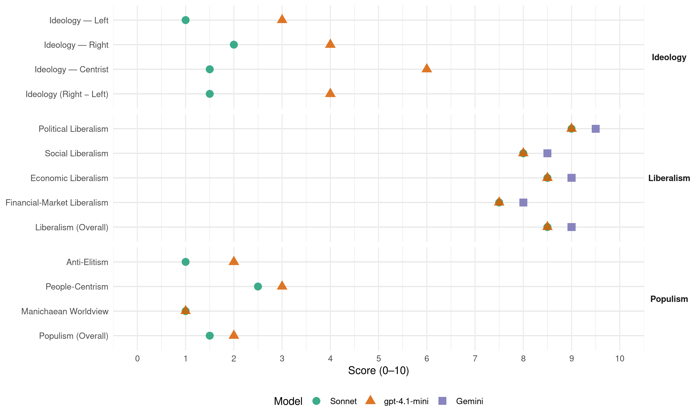

FDP/PRD (Switzerland, 1987)
manifesto_id 43420_198710
Get full text: This site shows derived annotations and short verbatim quotes only. The full manifesto text is © Manifesto Project / WZB — obtain it via manifesto-project.wzb.eu using the manifesto_id above.
Headline scores
| Dimension | Sonnet | gpt-4.1-mini | Gemini |
|---|---|---|---|
| Populism (Overall) | 1.5 | 2.0 | – |
| Anti-Elitism | 1.0 | 2.0 | – |
| People-Centrism | 2.5 | 3.0 | – |
| Manichaean Worldview | 1.0 | 1.0 | – |
| Ideology (Right − Left) | 1.5 | 4.0 | – |
| Liberalism (Overall) | 8.5 | 8.5 | 9.0 |
| Political Liberalism | 9.0 | 9.0 | 9.5 |
| Social Liberalism | 8.0 | 8.0 | 8.5 |
| Economic Liberalism | 8.5 | 8.5 | 9.0 |
| Financial-Market Liberalism | 7.5 | 7.5 | 8.0 |
Evidence per dimension
Economic Liberalism
Gemini · score 9.0 · verified · chunk 1
“unter freiheitlichen Rahmenbedingungen, die der Wirtschaft keine unnötigen Fesseln anlegen”
ist für die Wirtschaft die Grundvoraussetzung, um unseren im internationalen Vergleich hohen Wohlstand zu erhalten. Nur unter freiheitlichen Rahmenbedingungen, die der Wirtschaft keine unnötigen Fesseln anlegen, ist garantiert, dass sie zu schöpferischen Ideen
Gemini · score 9.0 · verified · chunk 2
“Befürworter der freien Marktwirtschaft”
innovative Grundhaltung in Wirtschaft und Gesellschaft beleben. 3. Als Befürworter der freien Marktwirtschaft haben wir die Chancen frühzeitig wahrzunehmen
gpt-4.1-mini · score 8.0 · verified · chunk 1
“Nur unter freiheitlichen Rahmenbedingungen, die der Wirtschaft keine unnötigen Fesseln anlegen, ist garantiert, dass sie zu schöpferischen Ideen und Innovationen fähig ist. Ein freier Handel ist deshalb für unser Land eine wichtige Grundvoraussetzung”
Die Freiheit ist für den einzelnen Menschen der notwendige Wertmassstab für sein privates, gesellschaftliches und ökonomisches Handeln. Sie findet Ausdruck in den individuellen Freiheitsrechten, der Gedanken-, Glaubensu nd Gewissensfreiheit, dem Recht auf freie Meinungs-äusserung und der Informationsfreiheit; ist für Menschen, die in Gruppen zusammenleben, von den gleichen Prinzipien bestimmt. Für ihre Beziehungen untereinander, sei es als Verein oder als Interessengemeinschaft, soll die freie Gestaltung ihrer Verhältnisse die Grundregel sein; ist für die Wirtschaft die Grundvoraussetzung, um unseren im internationalen Vergleich hohen Wohlstand zu erhalten. Nur unter freiheitlichen Rahmenbedingungen, die der Wirtschaft keine unnötigen Fesseln anlegen, ist garantiert, dass sie zu schöpferischen Ideen und Innovationen fähig ist. Ein freier Handel ist deshalb für unser Land eine wichtige Grundvoraussetzung; ist für die kulturelle und künstlerische Blüte unseres Landes die wichtigste Basis.
gpt-4.1-mini · score 9.0 · verified · chunk 2
“Marktwirtschaft erfahrungsgemäss den höchsten Wohlstand zu erzeugen”
Unter allen Wirtschaftssystemen vermag die Marktwirtschaft erfahrungsgemäss den höchsten Wohlstand zu erzeugen. Zudem hat sie zwei weitere unbestreitbare Vorteile.
Sonnet · score 8.0 · verified · chunk 1
“Ein freier Handel ist deshalb für unser Land”
Nur unter freiheitlichen Rahmenbedingungen, die der Wirtschaft keine unnötigen Fesseln anlegen, ist garantiert, dass sie zu schöpferischen Ideen und Innovationen fähig ist. Ein freier Handel ist deshalb für unser Land eine wichtige Grundvoraussetzung
Sonnet · score 9.0 · verified · chunk 2
“Unter allen Wirtschaftssystemen vermag die Marktwirtschaft”
Diese Zielsetzung lässt sich durch die Befolgung marktwirtschaftlicher Prinzipien optimieren. Unter allen Wirtschaftssystemen vermag die Marktwirtschaft erfahrungsgemäss den höchsten Wohlstand zu erzeugen.
Financial-Market Liberalism
Gemini · score 8.0 · verified · chunk 2
“Der Finanzplatz Schweiz ist von hohe”
Doppelbelastung der Familienaktiengesellschaften zu mildern. 3. Der Finanzplatz Schweiz ist von hohe volkswirtschaftlicher Bedeutung. Zu seiner Sicherung
gpt-4.1-mini · score 7.0 · verified · chunk 1
“Die FDP tritt ein für ein Datenschutzrecht, das die Erfassung, Speicherung und Verwendung von Personendaten durch die Verwaltungsbehörden und andere öffentliche Stellen generell regelt”
Im Zeitalter von Elektronik und Informatik stellt sich die Frage der Abgrenzung zwischen freier Verwendung neuer technischer Möglichkeiten und Schutz der Individual-sphäre. Die FDP tritt ein für ein Datenschutzrecht, das die Erfassung, Speicherung und Verwendung von Personendaten durch die Verwaltungsbehörden und andere öffentliche Stellen generell regelt, bei privaten Sammlungen aber auf die Bekämpfung von Missbräuchen ausgerichtet ist.
gpt-4.1-mini · score 8.0 · verified · chunk 2
“Der Finanzplatz Schweiz ist von hohe volkswirtschaftlicher Bedeutung”
Der Finanzplatz Schweiz ist von hohe volkswirtschaftlicher Bedeutung. Zu seiner Sicherung und Förderung hat der Staat für konkurrenzfähige Rahmenbedingungen zu sorgen.
Sonnet · score 7.0 · verified · chunk 1
“marktwirtschaftliche Prinzipien zu entsprechen”
Die Energiepolitik hat marktwirtschaftlichen Prinzipien zu entsprechen - eine dirigistische Energiepolitik ist abzulehnen
Sonnet · score 8.0 · verified · chunk 2
“Finanzplatz Schweiz ist von hoher volkswirtschaftlicher Bedeutung”
Der Finanzplatz Schweiz ist von hohe volkswirtschaftlicher Bedeutung. Zu seiner Sicherung und Förderung hat der Staat für konkurrenzfähige Rahmenbedingungen zu sorgen. Der wachsenden Benachteiligung gegenüber ausländischen Finanzplätzen ist vor allem durch gezielte Verbesserungen im fiskalischen Bereich entgegenzutreten.
Political Liberalism
Gemini · score 10.0 · verified · chunk 1
“politisches System der Freiheit, des Föderalismus, der Demokratie und des Rechtsstaates”
in langer Entwicklung vieles erreicht: ein stabiles nationales Gleichgewicht unter den sozialen Gruppen und unter den Regionen mit ihrer sprachlichen und kulturellen Vielfalt, ein politisches System der Freiheit, des Föderalismus, der Demokratie und des Rechtsstaates, an dem alle die Mitverantwortung tragen
Gemini · score 9.0 · verified · chunk 2
“Demokratie ist die Staatsform”
Kommunikation und Medien. Für Freiheit, Vielfalt und Wettbewerb. Demokratie ist die Staatsform, die am meisten auf Kommunikation, auf Durchschaubarkeit
gpt-4.1-mini · score 9.0 · verified · chunk 1
“ein politisches System der Freiheit, des Föderalismus, der Demokratie und des Rechtsstaates, an dem alle die Mitverantwortung tragen, in dem jeder in seinen Rechten geschützt ist”
Die Schweiz hat in langer Entwicklung vieles erreicht: ein stabiles nationales Gleichgewicht unter den sozialen Gruppen und unter den Regionen mit ihrer sprachlichen und kulturellen Vielfalt, ein politisches System der Freiheit, des Föderalismus, der Demokratie und des Rechtsstaates, an dem alle die Mitverantwortung tragen, in dem jeder in seinen Rechten geschützt ist und in dem sich das gemeinschaftliche Leben geordnet abspielt, einen hohen Stand der wirtschaftlichen Entwicklung und damit der allgemeinen Wohlfahrt mit echten Gestaltungsmöglichkeiten für den Einzelnen und mit einem ausgebauten System der sozialen Vorsorge, so dass die Freiheit keine blosse Theorie ist, sondern wirklich ausgeübt werden kann.
gpt-4.1-mini · score 9.0 · verified · chunk 2
“Demokratie ist die Staatsform, die am meisten auf Kommunikation”
Demokratie ist die Staatsform, die am meisten auf Kommunikation, auf Durchschaubarkeit der Entscheide, Vielfalt der Meinungen und Konkurrenz der Ideen angewiesen ist.
Sonnet · score 9.0 · verified · chunk 1
“freiheitlichen, demokratischen und föderalistischen Rechtsstaat”
Für einen freiheitlichen, demokratischen und föderalistischen Rechtsstaat Der aktive und selbstverantwortliche Mensch
Sonnet · score 9.0 · verified · chunk 2
“Demokratie ist die Staatsform, die am meisten auf Kommunikation”
Kommunikation und Medien. Für Freiheit, Vielfalt und Wettbewerb. Demokratie ist die Staatsform, die am meisten auf Kommunikation, auf Durchschaubarkeit der Entscheide, Vielfalt der Meinungen und Konkurrenz der Ideen angewiesen ist.
Liberalism (Overall)
Gemini · score 9.0 · verified · chunk 1
“politisches System der Freiheit, des Föderalismus, der Demokratie und des Rechtsstaates”
in langer Entwicklung vieles erreicht: ein stabiles nationales Gleichgewicht unter den sozialen Gruppen und unter den Regionen mit ihrer sprachlichen und kulturellen Vielfalt, ein politisches System der Freiheit, des Föderalismus, der Demokratie und des Rechtsstaates, an dem alle die Mitverantwortung tragen
Gemini · score 9.0 · verified · chunk 2
“Gedankengut des Liberalismus nicht zu trennen”
vor allem Entwicklung und Prägung der Persönlichkeit, dann ist sie vom Gedankengut des Liberalismus nicht zu trennen. Eine liberale Gesellschaft verschafft
gpt-4.1-mini · score 8.0 · verified · chunk 1
“ein politisches System der Freiheit, des Föderalismus, der Demokratie und des Rechtsstaates, an dem alle die Mitverantwortung tragen, in dem jeder in seinen Rechten geschützt ist”
Die Schweiz hat in langer Entwicklung vieles erreicht: ein stabiles nationales Gleichgewicht unter den sozialen Gruppen und unter den Regionen mit ihrer sprachlichen und kulturellen Vielfalt, ein politisches System der Freiheit, des Föderalismus, der Demokratie und des Rechtsstaates, an dem alle die Mitverantwortung tragen, in dem jeder in seinen Rechten geschützt ist und in dem sich das gemeinschaftliche Leben geordnet abspielt, einen hohen Stand der wirtschaftlichen Entwicklung und damit der allgemeinen Wohlfahrt mit echten Gestaltungsmöglichkeiten für den Einzelnen und mit einem ausgebauten System der sozialen Vorsorge, so dass die Freiheit keine blosse Theorie ist, sondern wirklich ausgeübt werden kann.
gpt-4.1-mini · score 9.0 · verified · chunk 2
“Demokratie ist die Staatsform, die am meisten auf Kommunikation”
Demokratie ist die Staatsform, die am meisten auf Kommunikation, auf Durchschaubarkeit der Entscheide, Vielfalt der Meinungen und Konkurrenz der Ideen angewiesen ist.
Sonnet · score 8.0 · verified · chunk 1
“freiheitlichen Rahmenbedingungen, die der Wirtschaft keine unnötigen Fesseln”
Nur unter freiheitlichen Rahmenbedingungen, die der Wirtschaft keine unnötigen Fesseln anlegen, ist garantiert, dass sie zu schöpferischen Ideen und Innovationen fähig ist
Sonnet · score 9.0 · verified · chunk 2
“Pressefreiheit als Ausdruck der allgemeineren Informations- und Meinungsfreiheit”
Deshalb ist die Pressefreiheit als Ausdruck der allgemeineren Informations- und Meinungsfreiheit in einer offenen und freien Gesellschaft unabdingbare Voraussetzung für die Willensbildung des Souveräns.
Anti-Elitism
gpt-4.1-mini · score 2.0 · verified · chunk 1
“Egoismus und Eigensinn dürfen jedoch nicht dazu führen, uns von der Völkergemeinschaft und ihren legalen Interessen soweit zu entfernen, dass wir uns ihr entfremden.”
Die Aussenpolitik ist derart zu gestalten, dass die Selbständigkeit unseres Landes nicht in Frage gestellt wird. Egoismus und Eigensinn dürfen jedoch nicht dazu führen, uns von der Völkergemeinschaft und ihren legalen Interessen soweit zu entfernen, dass wir uns ihr entfremden. Das Schicksal der Erde ist auch unser Schicksal, Für die Sicherheit unseres Landes bleibt der Grundsatz der Neutralität bestehen.
Sonnet · score 1.0 · verified · chunk 1
“Wer Kulturpessimismus verbreitet oder den «Ausstieg» predigt”
verkennt naiv oder unterdrückt böswillig, wie sehr sich die Lage der ganzen Bevölkerung innerhalb einer Generation verbessert hat
Sonnet · score 1.0 · verified · chunk 2
“Von einem «Steuerparadies Schweiz» kann nicht mehr die Rede sein”
Die mittel- und langfristige Sanierung des Bundeshaushaltes bleibt weiterhin nicht gesichert. Demgegenüber ist in den vergangenen 20 Jahren die Steuerbelastung für den Bürger und die Wirtschaft überdurchschnittlich angestiegen. Von einem «Steuerparadies Schweiz» kann nicht mehr die Rede sein.
Ideology — Centrist
gpt-4.1-mini · score 6.0 · verified · chunk 1
“Die FDP tritt ein für einen freiheitlichen Staat, in dem Platz bleibt für die Bewältigung der anstehenden Probleme durch den Einzelnen, durch die Familien und durch kleine Gruppen”
Für einen freiheitlichen, demokratischen und föderalistischen Rechtsstaat Der aktive und selbstverantwortliche Mensch. Die drei Wege zum Ziel, mit denen die Schwerpunkte für die Legislatur 1987/91 umschrieben werden, sind nach Überzeugung der FDP vom einzelnen Bürger zu beschreiten in der Ausübung seiner Selbstverantwortung und in der Wahrnehmung seiner Mitverantwortung für die Gemeinschaft, die ihm dank seiner demokratischen Rechte zukommt. Ücr Vorstellung dci l’.u’lci entsprichl der altliv Mrnscii, der sein Schicksal meistert und allein, mit seiner Familie oder mit ändern zusammen Aufgaben anpackt und löst.
Sonnet · score 2.0 · verified · chunk 1
“freiheitliche Demokratie hat immer wieder bewiesen”
Die freiheitliche Demokratie hat immer wieder bewiesen, dass sie in der Lage ist, anspruchsvolle Aufgaben zu lösen
Sonnet · score 1.0 · verified · chunk 2
“freisinnige Wirtschaftspolitik”
Die Schwerpunkte der freisinnigen Wirtschaftspolitik. Für ein gesundes Gewerbe, eine zukunftsorientierte Industrie und qualifizierte Dienstleistungen.
Ideology — Left
gpt-4.1-mini · score 3.0 · verified · chunk 1
“Die FDP ist denn auch immer und besonders in der Legislatur 83/87 eingetreten für die Erhaltung des nationalen Gleichgewichts, für die Wahrung der Funktionsfähigkeit des politischen Systems und für eine an neuen, an wirtschaftlichen und nicht-wirtschaftlichen Massstäben gemessene Wohlfahrt aller.”
Die FDP ist denn auch immer und besonders in der Legislatur 83/87 eingetreten für die Erhaltung des nationalen Gleichgewichts, für die Wahrung der Funktionsfähigkeit des politischen Systems und für eine an neuen, an wirtschaftlichen und nicht-wirtschaftlichen Massstäben gemessene Wohlfahrt aller. Stillstehen aber dürfen wir nicht. Neue Herausforderungen sind uns gestellt, die wir annehmen müssen und für die wir eine freiheitliche Lösung treffen wollen.
Sonnet · score 1.0 · verified · chunk 1
“soziale Wohlfahrt und die Anwendung einer”
Eine neuen Anforderungen entsprechende starke Wirtschaft ist unerlässliche Voraussetzung für die soziale Wohlfahrt
Sonnet · score 1.0 · verified · chunk 2
“Chancengleichheit und Freiheit der Berufswahl”
Das heutige Bildungswesen ist charakterisiert durch solide Ausbildung des einzelnen Menschen und differenzierte Ausbildungsmöglichkeiten im beruflichen Bereich. Chancengleichheit und Freiheit der Berufswahl sind weitgehend verwirklicht.
Ideology (Right − Left)
gpt-4.1-mini · score 4.0 · verified · chunk 1
“Die FDP tritt ein für einen freiheitlichen Staat, in dem Platz bleibt für die Bewältigung der anstehenden Probleme durch den Einzelnen, durch die Familien und durch kleine Gruppen”
Für einen freiheitlichen, demokratischen und föderalistischen Rechtsstaat Der aktive und selbstverantwortliche Mensch. Die drei Wege zum Ziel, mit denen die Schwerpunkte für die Legislatur 1987/91 umschrieben werden, sind nach Überzeugung der FDP vom einzelnen Bürger zu beschreiten in der Ausübung seiner Selbstverantwortung und in der Wahrnehmung seiner Mitverantwortung für die Gemeinschaft, die ihm dank seiner demokratischen Rechte zukommt. Ücr Vorstellung dci l’.u’lci entsprichl der altliv Mrnscii, der sein Schicksal meistert und allein, mit seiner Familie oder mit ändern zusammen Aufgaben anpackt und löst.
Sonnet · score 2.0 · verified · chunk 1
“gegen eine übermässige Zuwanderung von aussen”
Sie ist auf ein Mass zu beschränken, das der wünschbaren Entwicklung unseres Landes entspricht
Sonnet · score 1.0 · verified · chunk 2
“Befürworter der freien Marktwirtschaft”
Als Befürworter der freien Marktwirtschaft haben wir die Chancen frühzeitig wahrzunehmen und Bedrohungen rechtzeitig zu erkennen, damit durch Nutzung des technischen Fortschrittes hohe Beschäftigung und breit abgenützter Wohlstand bestehen bleiben.
Ideology — Right
gpt-4.1-mini · score 4.0 · verified · chunk 1
“Im Zielkonflikt zwischen wirtschaftlicher Freiheit und Konkurrenzfähigkeit einerseits und dem Bestand des Arbeitsplatzes andererseits werden Garantien verlangt, die dem Bedürfnis nach Sicherheit entsprechen; gegen eine übermässige Zuwanderung von aussen.”
Er sucht Werte, an denen er sich orientieren kann. Der Mensch sucht Sicherheit im sozialen und gesundheitlichen Bereich. Er möchte im Alter, bei Unfall oder Krankheit auf Hilfe zahlen, die er sich selber nicht leisten kann. Deshalb ist dafür zu sorgen, dass die sozialen Versicherungen ihre Leistungen auch langfristig erbringen können; bei seiner täglichen Arbeit, wo er sich als Arbeitnehmer technischen Errungenschaften gegenüber sieht, die seinen herkömmlichen Arbeitsplatz in Frage stellen könnten. Im Zielkonflikt zwischen wirtschaftlicher Freiheit und Konkurrenzfähigkeit einerseits und dem Bestand des Arbeitsplatzes andererseits werden Garantien verlangt, die dem Bedürfnis nach Sicherheit entsprechen; gegen eine übermässige Zuwanderung von aussen.
Sonnet · score 3.0 · verified · chunk 1
“gegen eine übermässige Zuwanderung von aussen”
Sie ist auf ein Mass zu beschränken, das der wünschbaren Entwicklung unseres Landes entspricht. Wirklich Verfolgte sollen weiterhin aufgenommen werden
Sonnet · score 1.0 · verified · chunk 2
“Integration und Assimilierung ausländischer Jugendlicher”
Wir unterstützen die Bemühungen zur Integration und Assimilierung ausländischer Jugendlicher, insbesondere der zweiten Generation.
Manichaean Worldview
gpt-4.1-mini · score 1.0 · verified · chunk 1
“Machenschaften, bei denen die Institutionen missbraucht werden, ist konsequent entgegenzutreten, auch wenn sich die Urheber auf ihre eigene Vorstellung von Moral und Gerechtigkeit berufen.”
Die FDP wird sich auch in Zukunft für unsere rechtsstaatlichen Einrichtungen vorbehaltlos einsetzen. Machenschaften, bei denen die Institutionen missbraucht werden, ist konsequent entgegenzutreten, auch wenn sich die Urheber auf ihre eigene Vorstellung von Moral und Gerechtigkeit berufen. Mann und Frau und die Familie in der freiheitlichen Gesellschaft.
Sonnet · score 1.0 · verified · chunk 1
“unterdrückt böswillig, wie sehr sich die Lage”
Wer Kulturpessimismus verbreitet oder den «Ausstieg» predigt, verkennt naiv oder unterdrückt böswillig
Sonnet · score 1.0 · verified · chunk 2
“Staat und Wirtschaft seien keine Gegensätze”
Wir Freisinnigen sind der Auffassung, Staat und Wirtschaft seien keine Gegensätze, sondern Partner, die sich gegenseitig brauchen.
People-Centrism
gpt-4.1-mini · score 3.0 · verified · chunk 1
“Die FDP tritt ein für einen freiheitlichen Staat, in dem Platz bleibt für die Bewältigung der anstehenden Probleme durch den Einzelnen, durch die Familien und durch kleine Gruppen”
Für einen freiheitlichen, demokratischen und föderalistischen Rechtsstaat Der aktive und selbstverantwortliche Mensch. Die drei Wege zum Ziel, mit denen die Schwerpunkte für die Legislatur 1987/91 umschrieben werden, sind nach Überzeugung der FDP vom einzelnen Bürger zu beschreiten in der Ausübung seiner Selbstverantwortung und in der Wahrnehmung seiner Mitverantwortung für die Gemeinschaft, die ihm dank seiner demokratischen Rechte zukommt. Ücr Vorstellung dci l’.u’lci entsprichl der altliv Mrnscii, der sein Schicksal meistert und allein, mit seiner Familie oder mit ändern zusammen Aufgaben anpackt und löst.
Sonnet · score 3.0 · verified · chunk 1
“In den Abstimmungen muss der unverfälschte Volkwillen zum Ausdruck kommen”
Die amtlichen Abstimmungsunterlagen sind so zu gestalten, dass sich die Bürger wirklich orientieren können
Sonnet · score 2.0 · verified · chunk 2
“Jedermann soll die Möglichkeit haben”
Unsere Sportverbände mit ihren Vereinen bieten ein umfassendes Freizeitangebot für alle Bevölkerungsschichten und Altersgruppen. Jedermann soll die Möglichkeit haben, sich entsprechend seinen Neigungen sportlich zu betätigen.
Populism (Overall)
gpt-4.1-mini · score 2.0 · verified · chunk 1
“Die FDP tritt ein für einen freiheitlichen Staat, in dem Platz bleibt für die Bewältigung der anstehenden Probleme durch den Einzelnen, durch die Familien und durch kleine Gruppen”
Für einen freiheitlichen, demokratischen und föderalistischen Rechtsstaat Der aktive und selbstverantwortliche Mensch. Die drei Wege zum Ziel, mit denen die Schwerpunkte für die Legislatur 1987/91 umschrieben werden, sind nach Überzeugung der FDP vom einzelnen Bürger zu beschreiten in der Ausübung seiner Selbstverantwortung und in der Wahrnehmung seiner Mitverantwortung für die Gemeinschaft, die ihm dank seiner demokratischen Rechte zukommt. Ücr Vorstellung dci l’.u’lci entsprichl der altliv Mrnscii, der sein Schicksal meistert und allein, mit seiner Familie oder mit ändern zusammen Aufgaben anpackt und löst.
Sonnet · score 2.0 · verified · chunk 1
“unverfälschte Volkwillen zum Ausdruck kommen”
In den Abstimmungen muss der unverfälschte Volkwillen zum Ausdruck kommen. Die amtlichen Abstimmungsunterlagen sind so zu gestalten
Sonnet · score 1.0 · verified · chunk 2
“Von einem «Steuerparadies Schweiz» kann nicht mehr die Rede sein”
Die mittel- und langfristige Sanierung des Bundeshaushaltes bleibt weiterhin nicht gesichert. Demgegenüber ist in den vergangenen 20 Jahren die Steuerbelastung für den Bürger und die Wirtschaft überdurchschnittlich angestiegen. Von einem «Steuerparadies Schweiz» kann nicht mehr die Rede sein.
Social Liberalism